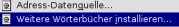

Rechtschreibprüfung, Silbentrennung und ThesaurusDie Rechtschreibprüfung, Silbentrennung und der Thesaurus funktionieren nur mit den entsprechenden Wörterbüchern. Nicht alle Bücher werden mit in das Installationspaket von OpenOffice.org integriert. Die Pakete können leicht mit DicOOo nachinstalliert werden.
Wichtiger Hinweis: Ab Version 1.1.1 von OpenOffice.org ist DicOOo bereits in das Programm integriert. Sie finden es im Menü "Datei -> Autopilot -> Weitere Wörterbücher installieren".  Ab Version 2.0 heißt es "Assistenten" statt "Autopilot". Weitere InformationenWeitere Infos zu DicOOo und Installationsmöglichkeiten der Sprachpakete finden Sie hier. Bei der Gestaltung dieser Seite haben mitgeholfen: Andreas Mantke. Die deutschsprachigen Wörterbücher werden gepflegt von Björn Jacke <bjoern[at]j3e.de>. |
|